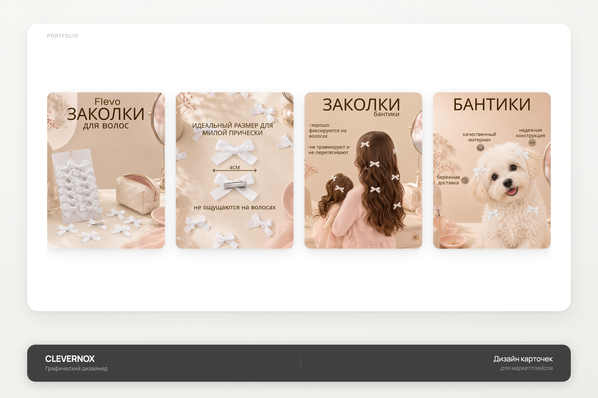
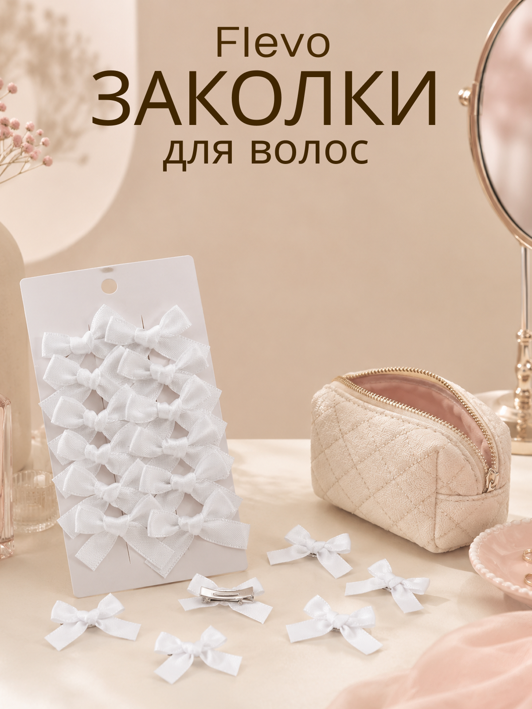
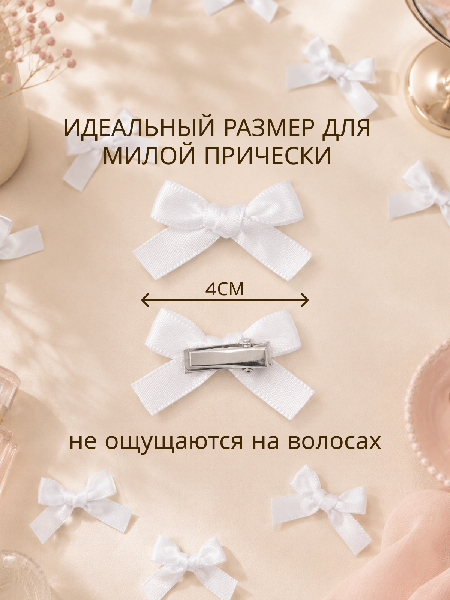
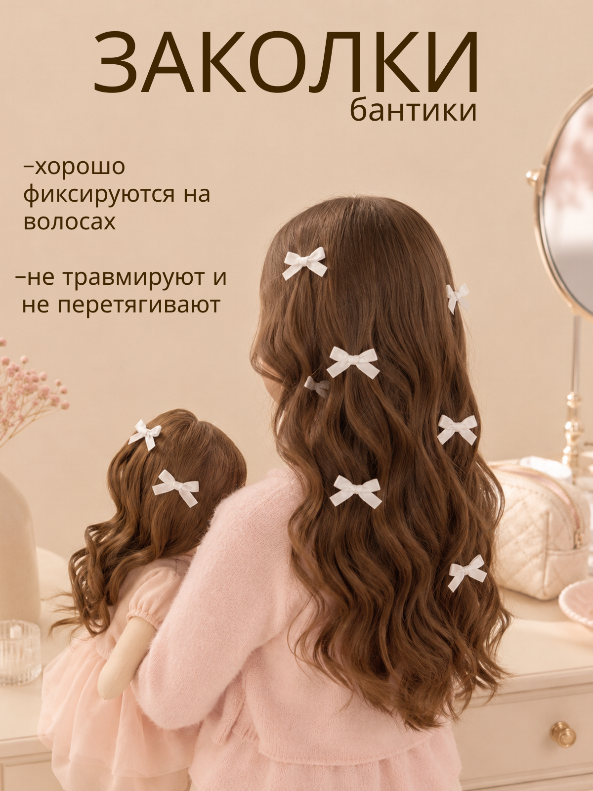
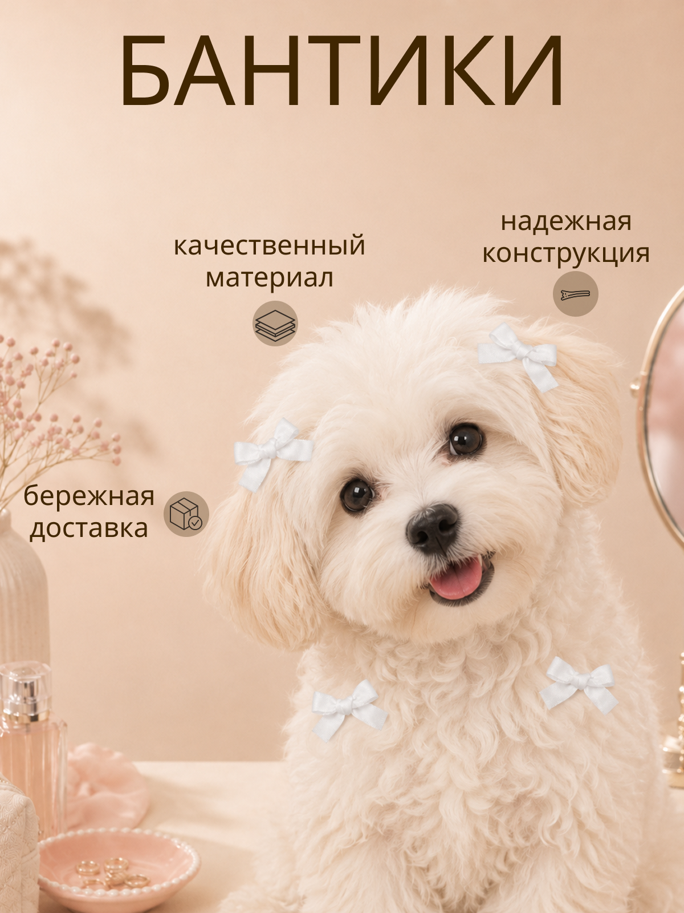

Flevo
Серия инфографических карточек для детских заколок-бантиков: главный слайд, размер, применение на волосах и преимущества.

- Клиент
- Flevo — бренд детских аксессуаров для волос
- Задача
- Разработать серию карточек товара для маркетплейса под набор заколок-бантиков: главный слайд с продуктом, точный размер изделия, применение на волосах и ключевые преимущества — в едином нежном бежево-розовом стиле.
- Роль
- Графический дизайнер: концепция серии, инфографика, типографика, компоновка предметной и лайфстайл-съёмки, подготовка под формат карточек маркетплейса.
Категория детских заколок на маркетплейсе решает вопрос доверия через два момента: насколько бантик действительно маленький и аккуратный, и насколько удобно и безопасно он держится на тонких детских волосах. Поэтому вместо одного общего фото было решено разбить эти вопросы на отдельные карточки, каждая из которых закрывает конкретное сомнение покупателя.
Первая карточка — предметная сцена на туалетном столике, задающая нежный тон всей линейки. Вторая — точный размер (4 см) через сравнение бантика без зажима и с зажимом, что критично для покупки вслепую на маркетплейсе. Третья показывает бантики в реальном применении — на волосах мамы и дочки, снимая сомнение «будет ли красиво смотреться на живых волосах». Четвёртая переключается на «тёплого» персонажа — щенка с бантиками — что смягчает восприятие бренда и одновременно показывает преимущества (материал, конструкция, доставка) без сухого перечисления.




Серия карточек закрыла ключевые сомнения покупателя — точный размер, безопасность фиксации и качество материала — через последовательность разных сцен применения, сохранив единый нежный стиль бренда.